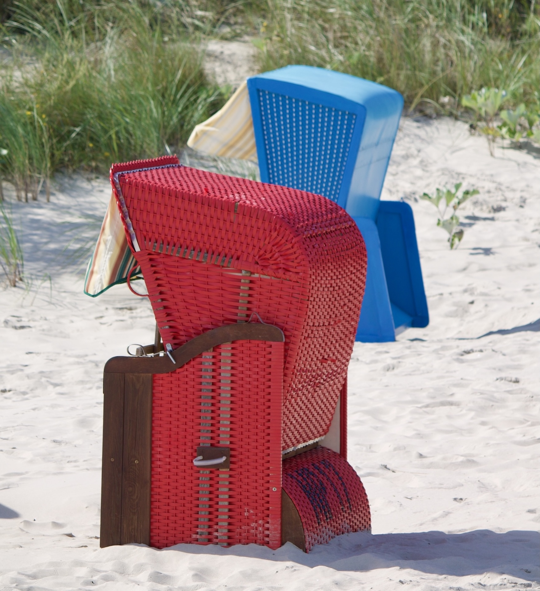

Strandkorb·
Andacht
Gott, ich bin hier, und du umgibst mich wie ein Strandkorb. Ich atme mit dem Wellenschlag deiner Schöpfung.
Herr, deine Güte reicht, so weit der Himmel ist, und deine Wahrheit, so weit die Wolken gehen. (Psalm 36,6)
Zeichne ein Kreuz in den Sand.

Was ist das Plus in deinem Leben?
Was macht dein Leben reich und schön?
Was macht dein Leben reich und schön?
Behütet und geborgen soll all dein Glück sein – wie in einem Strandkorb – mit Ausblick auf den Segen Gottes.
Amen
